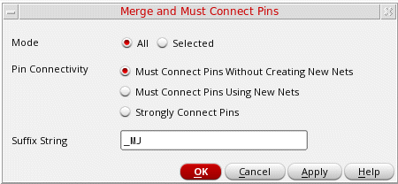

Merging Pins using the Pin Tool
You can merge two or more overlapping rectangular, rectilinear, or path pin shapes into a single rectilinear shape. Pin shapes are merged based on their connectivity. This implies that overlapping pin shapes that are on the same layer and are connected to the same net can be merged. Non-overlapping pin shapes that cannot be merged form islands. The must-connect-all-pins property, also referred to as the must-join property, is applied to these islands and to the merged shapes.
The following example shows how overlapping pins that belong to the same layer and are connected to the same net, net C, are merged.
The merged pin shapes derive their names from the name of the connecting terminal. For example, when pin shapes C:C:C, C:C:C1, C:C:C2, and C:C:C3 are merged, the resultant pin shape is named C:C:C. In the absence of a pin shape with the same name as the terminal, for example, C:C:C, the name of any pin shape, for example, C:C:C1, is considered.
You can either apply the must connect all pins setting to the existing terminals or create new nets and terminals for each island and then apply the must connect all pins setting. You can also specify a suffix string for the new terminals. The default value is _MJ.
To merge pins by using the Pin Tool:
- Choose Plan – Pin Planning – Pin Tool. The Pin Browser is displayed.
-
Select Tools – Merge and Must Connect Pins. The Merge and Must Connect Pins form appears.
 - In the Mode section, choose All to apply to all pin shapes. Choose Selected to apply to the selected pin shapes.
- In the Pin Connectivity section, you can specify the connectivity settings for the merged pin.
-
Select Must Connect Pins Without Creating New Nets (default) to retain the connectivity of the pin shapes. The
must connect all pinssetting is applied to the existing terminals. -
Select Must Connect Pins Using New Nets to create new nets, terminals, and pins for each pin shape island. The new terminals are connected and are placed together in a
must connectgroup. - Select Strongly Connect Pins to specify that a single connection point on a highly conductive metal is to be used to provide the required connectivity.
-
Specify the Suffix String to be added to the new nets, terminals, and pins that have been created on the merged pin islands. By default, the suffix added is
_MJ. This setting is applied only when Must connect pins using new nets is selected. - Click OK.
Overlapping pins are merged and the Must Connect Terms setting is applied to the resultant non-overlapping pin shapes as specified.
Related Topics
Merge and Must Connect Pins Form
Return to top